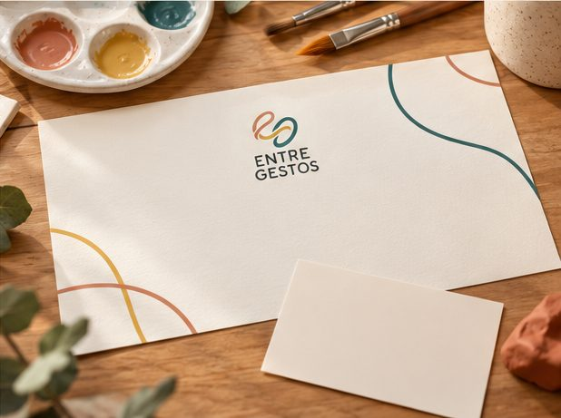
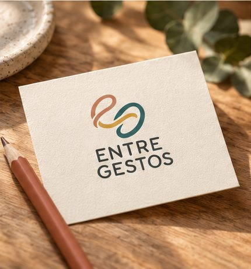

Memórias em Cores
Pintura livre em tela ou placa, a partir de uma lembrança ou de formas abstratas.
Oficinas criativas para mulheres
Vagas limitadas por turma.
Materiais e lanche inclusos.

Um tempo só seu para desacelerar, experimentar materiais e conversar com outras mulheres. Participar já é o suficiente: ninguém avalia o resultado.
Você não precisa esperar o cansaço virar rotina. Criar com as mãos é um convite para desacelerar, voltar ao presente e se conectar com outras mulheres, sem pressão e sem julgamento.
O Entre Gestos não é terapia: é um encontro de mulheres para cuidar de si. Para mulheres a partir de 18 anos. Se precisar de algum apoio de acessibilidade, conte na inscrição.
Você escolhe o que criar e se quer contar a história por trás. Compartilhar é sempre um convite, nunca uma obrigação.
Quero participarSão 120 minutos em uma sequência leve: acolher, experimentar, criar, compartilhar e encerrar. Tema do piloto: uma experiência que merece ser guardada.
A equipe recebe o grupo e apresenta o espaço.
Você escolhe uma imagem, cor ou objeto como ponto de partida.
Teste de pincéis e tintas no papel, sem compromisso.
Você pinta a sua peça a partir de uma lembrança ou do que sentir no momento.
Quem quiser mostra a criação. Quem preferir só acompanha.
Lanche, conversa livre e orientações para levar a peça.

Com o mesmo grupo, um encontro por semana. Cada um explora um material diferente.
Pintura livre em tela ou placa, a partir de uma lembrança ou de formas abstratas.
Colagem com imagens de lugares, objetos e cenas para montar uma nova história.
Modelagem para explorar pressão, forma e movimento com as mãos.
Um painel coletivo em que cada participante escolhe o que incluir.
Espaço reservado para o primeiro depoimento, coletado com autorização após o piloto.
Nome da participante
Espaço reservado para depoimento. Usar apenas frases reais, com permissão por escrito.
Nome da participante
Espaço reservado para depoimento. Pode ser a frase que a pessoa escolheu para a própria peça.
Nome da participante
O nome une o gesto da mão que cria ao gesto de acolher e às trocas entre pessoas. Cada encontro tem uma equipe de três pessoas.
O Entre Gestos é uma vivência de convivência e bem-estar. Não é psicoterapia, diagnóstico ou tratamento.
Inclui todos os materiais, a peça que você leva para casa, lanche e água. As regras de cancelamento e reembolso são enviadas junto com a confirmação da inscrição.
Garantir minha vagaNão. A facilitação mostra cada etapa e você pode só explorar cores, se preferir.
Não. Contar a história da sua criação é um convite. Você pode participar em silêncio.
Na maioria das vezes, sim. Se a tinta precisar de mais tempo para secar, a retirada é combinada antes de começar.
Pode. Cada participante faz a própria inscrição para garantirmos lugar, material e lanche.
Conte na inscrição. Temos pincéis adaptados, bases antiderrapantes e outras opções, e combinamos com você o que for preciso.